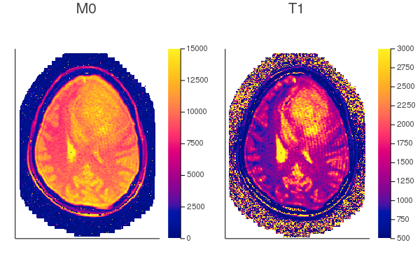

Pre-processing
Before applying RRIFT, there's a couple of pre-processing steps including:
- Load imaging data from the VFA DICOM files & compute T1 maps
- Load imaging data form the DCE DICOM files & convert the DCE-MRI signal into tracer concentration
- Extract signal-time curves from the tumour, muscle, and artery for subsequent model fitting
Download DICOM files
The pre-processing steps will be shown for a single patient. First, the DICOM files must be downloaded.
chosen_study_uid = RRIFT.gbm_study_uids[8]
dicom_folders = download_invivo_studies(chosen_study_uid,
destination = "./data/tcga-gbm-dicom")
# Extract the vfa and dce folders from `dicom_folders`
vfa_folder = dicom_folders.vfa_folders[1]
dce_folder = dicom_folders.dce_folders[1]
println("VFA: $vfa_folder")
println("DCE: $dce_folder")VFA: ./data/tcga-gbm-dicom/1.3.6.1.4.1.14519.5.2.1.4591.4001.304604545029494418165835320551/vfa
DCE: ./data/tcga-gbm-dicom/1.3.6.1.4.1.14519.5.2.1.4591.4001.304604545029494418165835320551/dceT1 mapping
T1 mapping is provided by the fit_relaxation function. There are three algorithms for T1 mapping:
- Non-linear least squares fitting of the spoiled gradient echo equation
- Linear least squares fitting with DESPOT1
- Iterative fitting with NOVIFAST
The fitting algorithm is selected by passing either :nls, :despot, or :novifast as the first argument. This example uses DESPOT1 because that is what the paper used. I wasn't aware of NOVIFAST when I wrote the paper, or else I probably would've used it instead of DESPOT1.
# Load VFA data
vfa = RRIFT.load_vfa_dicom(folder = vfa_folder)
println("""
Some information for VFA data:
- It is a named tuple with keys: $(keys(vfa))
- Number of flip angles: $(length(vfa.angles))
- Value of flip angles, in degrees: $(sort(round.(rad2deg.(vfa.angles))))
- Size of signal data: $(size(vfa.signal))
- Repetition time, in ms: $(vfa.TR)
""")
# Compute T1 maps using DESPOT1
relaxation_maps = fit_relaxation(:despot; vfa...).estimates
# The variable `relaxation_maps` contains the keys: T1 & M0
keys(relaxation_maps)(:M0, :T1)The fit_relaxation function expects the first argument to be a symbol followed by keyword arguments. The keywords are signal, angles, and TR. In others words, it could've been written as: fit_relaxation(:despot, signal = vfa.signal, angles = vfa.angles, TR = vfa.TR). However, since the keys in vfa match the function's keywords, we can just splat it with ....
# Remove empty rows/columns for display purposes
M0 = crop(relaxation_maps.M0)
T1 = crop(relaxation_maps.T1)
slice = 8
figopts = (c = :cinferno, yflip = true, aspect_ratio = :equal, axis = nothing)
p1 = heatmap(M0[:,:,slice]; clim=(0, 15000), title="M0", figopts...)
p2 = heatmap(T1[:,:,slice]; clim=(500, 3000), title="T1", figopts...)
plot(p1, p2, layout=(1,2))
DCE-MRI signal to concentration conversion
The T1 map is used to convert the DCE-MRI signal into tracer concentration.
# Load the DCE-MRI data
dce = RRIFT.load_dce_dicom(folder = dce_folder)
println("""
Some information for DCE data:
- It is a named tuple with keys: $(keys(dce))
- Size of signal data: $(size(dce.signal))
- Number of timepoints/frames: $(length(dce.timepoints))
- Flip angle, in degrees: $(rad2deg(dce.angle))
- Repetition time, in ms: $(dce.TR)
""")
r1 = 3.3/1000 # Relaxivity of Gd-DTPA at 3T, in mM/ms. Ref: PMID 16481903
BAF = 3 # Bolus arrival frame, i.e. the frame at which the tracer arrives in the imaging volume
R10 = 1 ./ relaxation_maps.T1 # The function wants R1 instead of T1
concentration = signal_to_concentration(dce.signal;
angle = dce.angle, TR = dce.TR, R10 = R10, BAF = BAF, r1 = r1)
println("Concentration size: $(size(concentration))")Some information for DCE data:
- It is a named tuple with keys: (:signal, :timepoints, :TR, :angle)
- Size of signal data: (256, 256, 16, 70)
- Number of timepoints/frames: 70
- Flip angle, in degrees: 20.0
- Repetition time, in ms: 5.044
Concentration size: (256, 256, 16, 70)Wrapper function for T1 mapping and signal-concentration conversion
The functions in the previous section were shown for educational purposes. The compute_concentration function wraps the previous steps together:
computed = compute_concentration(vfa_folder = vfa_folder, dce_folder = dce_folder)
println("""
Some information for the computed maps:
- It is a named tuple with keys: $keys(computed)
- Does it have the same T1 map as we computed earlier? $(all(@. (computed.T1 == relaxation_maps.T1)[!isnan(computed.T1)]))
- Does it have the same concentration as computed earlier? $(all(@. (computed.ct == concentration)[!isnan(concentration)]))
""")Some information for the computed maps:
- It is a named tuple with keys: keys(computed)
- Does it have the same T1 map as we computed earlier? true
- Does it have the same concentration as computed earlier? trueApplying masks
Pharmacoknetic modelling of DCE-MRI requires concentration-time curves from:
- the tissue of interest (tumour in our cases) denoted as
ct - the feeding artery (arterial input function / AIF) denoted as
cp- technically, it should be
cband we'll actually be using a vein instead of artery
- technically, it should be
- a healthy reference tissue (muscle) denoted as
crr
Not all models require the same curves. For example, the well-established Tofts model only needs ct and cp, whereas the reference region model needs ct and crr.
Contours/masks for the tumour/muscle/blood-vessel were manually drawn and they can be downloaded by:
mask_folder = "./data/tcga-gbm-masks"
download_invivo_masks(destination = mask_folder)"./data/tcga-gbm-masks"Masks can be loaded and applied by:
# Get masks for the chosen study
mask = get_mask(study = chosen_study_uid, mask_folder = mask_folder)
println("Mask has keys: $(keys(mask))")
hematocrit = 0.4 # For AIF (assumed value)
t = computed.t
ct = apply_mask(data = computed.ct, mask = mask.tumour)
cp = apply_mask(data = computed.ct, mask = mask.aif) ./ (1 - 0.4)
crr = apply_mask(data = computed.ct, mask = mask.muscle)
# cp and crr are averaged because only a single representative curve is needed from each
cp = vec(mean(cp, dims=1))
crr = vec(mean(crr, dims=1))
nothing # Suppressing outputMask has keys: (:aif, :muscle, :tumour)(Another) Wrapper function for all pre-processing steps
The pre-processing steps—i.e. T1 mapping, signal-concentration conversion, masking—are needed for each study. Rather than repeating these steps every time, a wrapper function named preprocess_dicom_to_mat is used. This function applies all of the preceding steps and saves the result as a MATLAB-compatible .mat file.
julia> preprocessed_mat_files = preprocess_dicom_to_mat(
destination = "./data/tcga-gbm-mat-test",
dicom_folders = dicom_folders,
mask_folder = mask_folder)
1-element Array{String,1}:
"./data/tcga-gbm-mat-test/1.3.6.1.4.1.14519.5.2.1.4591.4001.304604545029494418165835320551.mat"The saved .mat file can be loaded back into Julia by
mat_data = load_preprocessed_mat(preprocessed_mat_files[1])
println("""
Some information for the loaded mat_data
- It is a named tuple with keys: $(keys(mat_data))
- `masks` is a dictionary with keys: $(keys(mat_data.masks))
- `relaxation` is a dictionary with keys: $(keys(mat_data.relaxation))
""")Some information for the loaded mat_data
- It is a named tuple with keys: (:t, :ct, :crr, :cp, :relaxation, :masks)
- `masks` is a dictionary with keys: ["muscle", "tumour", "aif"]
- `relaxation` is a dictionary with keys: ["M0", "T1"]All 8 DCE-MRI studies can be pre-processed by running the following three lines:
dicom_folders = download_invivo_studies(destination = "./data/tcga-gbm-dicom")
mask_folder = download_invivo_masks(destination = "./data/tcga-gbm-masks")
preprocess_dicom_to_mat(destination = "./data/tcga-gbm-mat",
dicom_folders = dicom_folders, mask_folder = mask_folder)To save time, these steps were already done and the pre-processed files can be downloaded directly by:
mat_dir = "./data/tcga-gbm-mat"
download_invivo_preprocessed(destination = mat_dir)
# Confirm that files were downloaded:
mat_files = readdir(mat_dir)8-element Array{String,1}:
"1.3.6.1.4.1.14519.5.2.1.4591.4001.100057969162276274933613772317.mat"
"1.3.6.1.4.1.14519.5.2.1.4591.4001.269887096484012292940330991126.mat"
"1.3.6.1.4.1.14519.5.2.1.4591.4001.278082550121070125285213632206.mat"
"1.3.6.1.4.1.14519.5.2.1.4591.4001.304604545029494418165835320551.mat"
"1.3.6.1.4.1.14519.5.2.1.4591.4001.335353575986269052491315637674.mat"
"1.3.6.1.4.1.14519.5.2.1.4591.4001.365805576275232517344053939830.mat"
"1.3.6.1.4.1.14519.5.2.1.4591.4001.763554173270318063812534542847.mat"
"1.3.6.1.4.1.14519.5.2.1.4591.4001.961791689281776173751323306588.mat"